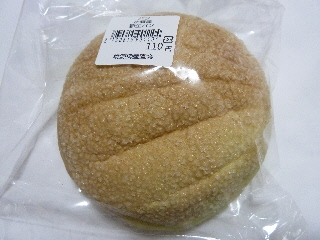

新生パンのメロンパン
2013/10/20
クッキー生地少な目のメロンパンですね。

デコボコしてないので上品な感じですね。口当たりもソフトです。
パン自体の味が美味しいなーって思いました。
あと、メロンのいい香りが美味しさを引き立ててました。
2013/10/20
クッキー生地少な目のメロンパンですね。

デコボコしてないので上品な感じですね。口当たりもソフトです。
パン自体の味が美味しいなーって思いました。
あと、メロンのいい香りが美味しさを引き立ててました。
2011/06/26
桃源市場（出雲市矢野町）で新生パン工場（出雲市神門町）のジャムパンを買いました。

しっかりとした焼き色がいいですね。パンの真ん中にある穴もなんか懐かしい感じがしていいです。
実際、ジャムが多く入った懐かしい感じのジャムパンでした。
美味しかったです。